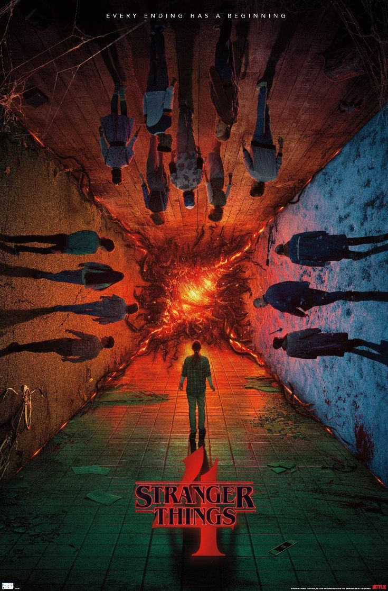

The Office , Dunder-Mifflin Kağıt Şirketi'nin Scranton şubesinin çalışanlarını konu alır. Ofis çalışanları her gün ilginç kişilikli patronlarına katlanmaya devam eder. Çalışanların da çok normal olduğu tam olarak söylenemez.

Stranger Things ufak bir kasabada küçük bir çocuk kaybolunca, gizli deneyler, korkutucu doğaüstü güçler ve tuhaf bir küçük kızın da parçası olduğu bir gizem ortaya çıkar.

After Life eşinin ölümünü kabullenmekte zorlanan bir gazete yazarı, kendisine yardım etmek isteyenleri uzaklaştırmak için hırçın bir yeni kişiliğe bürünür. Canınız neyi isterse izleyin. Altın Küreli Ricky Gervais, yazıp yönettiği bu dizide bir kez daha Ashley Jensen (Extras) ile kamera karşısına geçiyor.